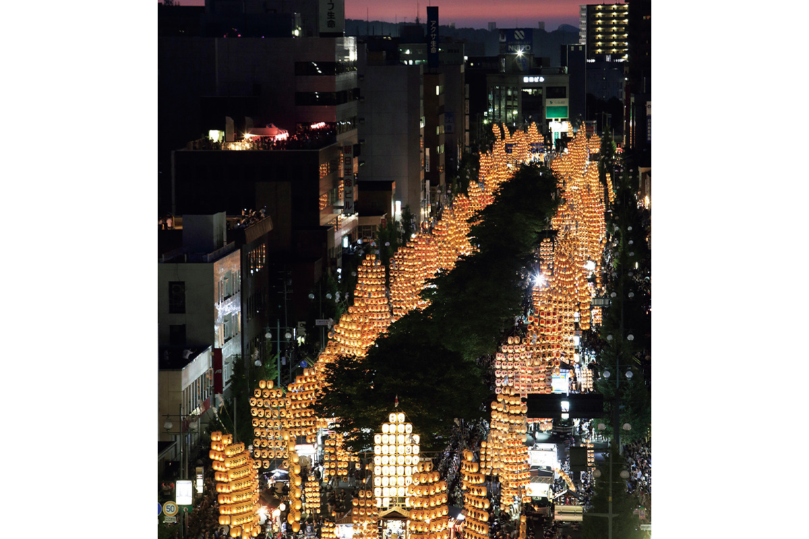
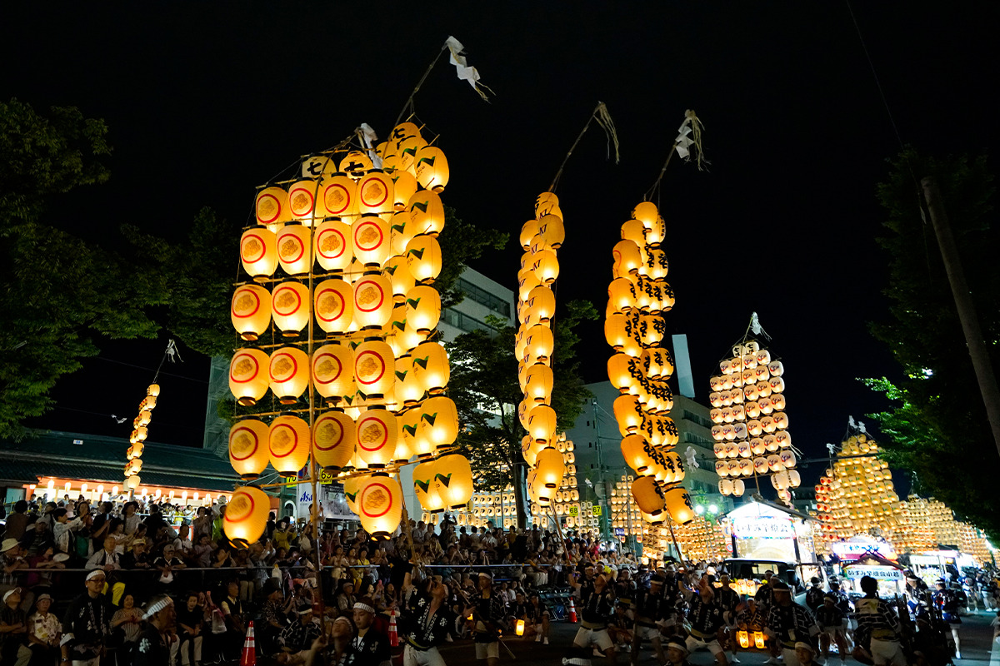
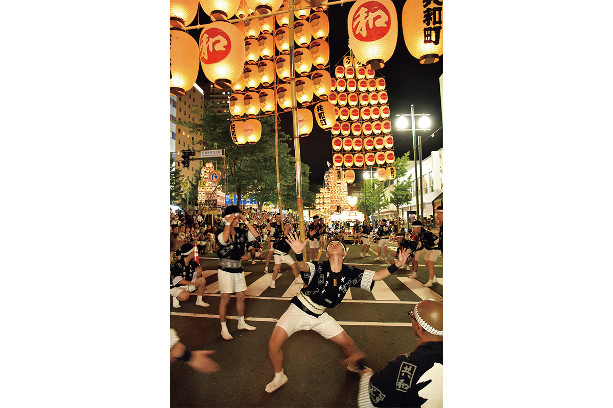

Префектура Акита · Акита · фестиваль
Фестиваль Канто в Аките: шесты с фонарями на ладони, лбу и плече

В начале августа главная улица Акиты на четыре вечера превращается в лес из светящихся фонарей. Около 280 бамбуковых шестов канто поднимаются над толпой, и каждый держит один человек: на ладони, на лбу, на плече.
Праздник
Шест, фонари и равновесие
Фестиваль Канто один из главных праздников префектуры Акита. Канто это длинный бамбуковый шест с поперечинами, на которых висят фонари в форме рисовых мешков. Держат его сасите, «держатели»: они удерживают всю конструкцию в равновесии, не давая ей упасть.
Самые большие канто достигают 12 м в высоту, фонарей на них бывает до 46, а весит такой шест до 50 кг. То, что делают с ним сасите, по сути уже цирковое искусство.

Истоки
Родня нэбуты из Аомори
Изначально фестиваль был обрядом «нэбури-нагаси»: летом так прогоняли злых духов и дурное. С виду канто совсем не похожи на огромные фигуры нэбута в соседнем Аомори, но корни у двух праздников общие.
Смотреть
Мастерство сасите и музыка канто-баяси
Главное, ради чего стоит приехать, это мастерство держателей. Шест в несколько десятков килограммов они ставят на ладонь, на лоб, на плечо или на поясницу. Смотреть на это тревожно, но когда трюк удаётся, толпа взрывается криками одобрения.

Знаток японских праздников советует прислушаться и к музыке. Мощная канто-баяси, оркестр фестиваля, звучит не хуже, чем выглядят шесты: протяжные флейты и тяжёлые барабаны разогревают праздничное настроение.
Еда
Фестиваль местной кухни
Фестиваль занимает большую часть района вокруг станции Акита, и одновременно с ним проходят фестиваль местной кухни и ярмарка уличных лотков. Здесь можно попробовать блюда Акиты, и немало туристов приезжает именно ради них. Летнюю Акиту стоит распробовать и на вкус.
Фестиваль Канто в Аките
- Адрес
- префектура Акита, Акита, улица Канто-одори (от перекрёстка Санно до перекрёстка у Ни-тёмэ) и окрестности
- Даты
- ежегодно 3–6 августа; в 2026 году с 3 по 6 августа
- Как добраться
- от станции JR Акита пешком около 15 минут
- Сайт
- kantou.gr.jp